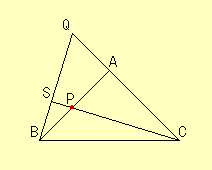

|
For triangle ABC, AB is equal to AC and the angle CAB is 90 degrees.
Take a point P on side AB. Then set Q on the line AC so that AP=AQ.
Set point S as the intersection of line CP and BQ. Prove that triangle CAP and BAQ are congruent. |  |
How to use the applet.This applet will help you to find congruent triangles.
|
|
Drag the red point. |